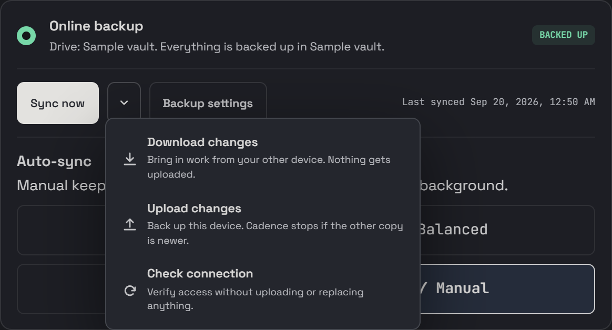
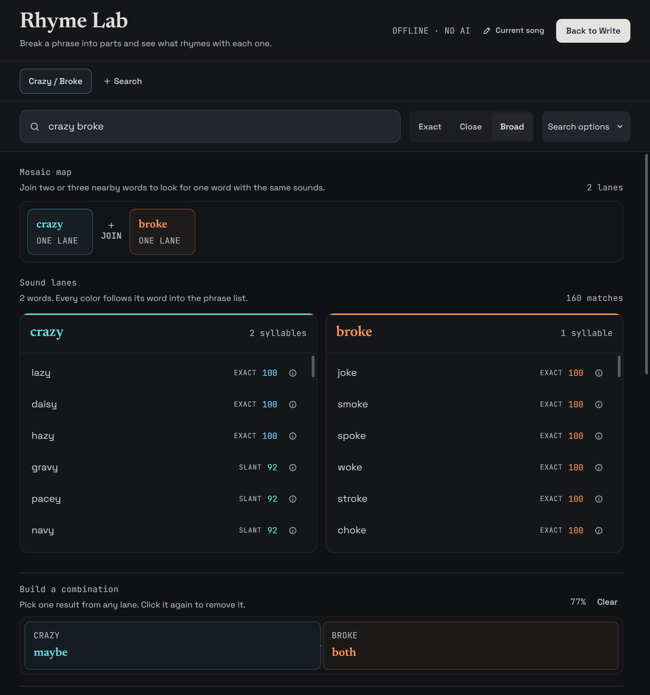
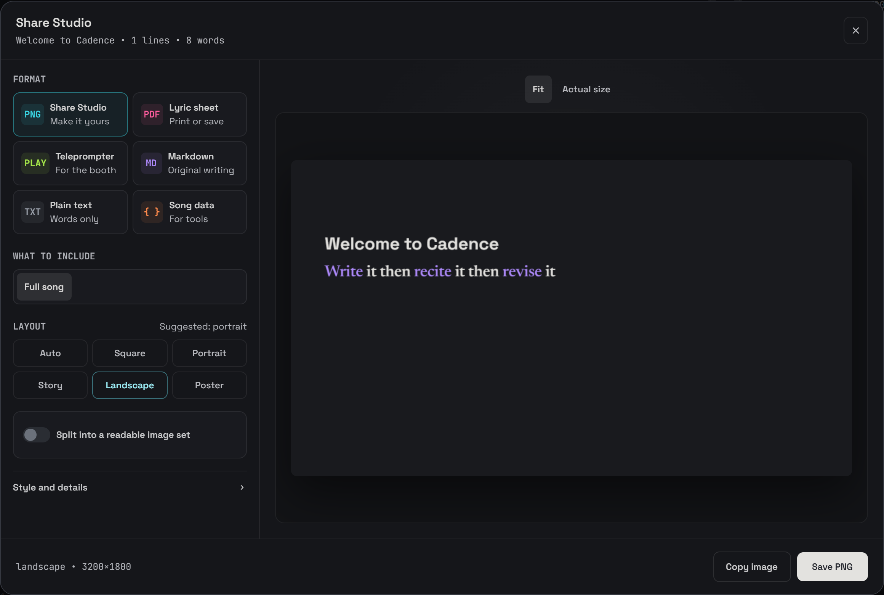

Matching sounds
pressuresessionlesson
flowglowshow
The same sound can turn up inside a line, not just at the end.
I wanted to see what my rhyme schemes were doing without losing my songs and loose lines across a bunch of apps. So I made Cadence. Write, see the sounds light up, and keep working on the bits that need it.
Free. Works offline. No AI writing or review.
I sit with this, pick at it, get specific with the rhythm and
Shift the stress, trim excess, give the sentence room to breathe,
Write it then recite it, if I choke then I revise it,
Make it sound like I just said it, even if it took all night.
This is 1.7. Lighter controls, readable titles, and less stuff fighting for your attention.
Pick up a song on your phone after working on it at your desk. Google Drive carries your writing between them. Let Cadence check for changes, or press Sync now yourself.
If both devices changed the same thing, you get to look at both copies before choosing. You can keep both versions too.
Install the Android APK directly. It is not on Google Play yet.

Choose how close the sounds need to be. If Cadence gets a match wrong, tell it.
The same sound can turn up inside a line, not just at the end.
Merge the family with another one or mark the word as not a rhyme. Cadence remembers what you changed.
sit · pick · specific · rhythm · shift · trim · give
get · stress · excess · sentence · said
breathe · even
write · recite · revise · like · night
Loose matching · default dictionary · no manual overrides · 76% word coverageSometimes the word is close, but the phrase still sounds wrong. Split it into sounds, try other words, and see what fits.
A loose line doesn't need to be a song yet. Keep it in Notes, link it to a song later, or move ideas around on a Board.
Make an image from the lines you want to share. Keep the rhyme colors, change the background, and leave my logo off if you want. There are printable sheets and a teleprompter too.
Write it then recite it then revise it


Open the example song, or start a new one. Cadence saves as you write. If you skipped the tour and want it back, it's in Settings.
You don't need an account to write. Connect online backup when you want it.
Your writing and version histories live on this device, in a SQLite database. You can export Markdown whenever you want to use another app. On desktop, the Markdown/Git folder keeps a readable copy of the same vault.
On Android, uninstalling can remove that local copy. Export a complete backup first if you want to keep your history too. Drive sync carries the writing, but version history stays on each device.
Update every connected device to 1.7 before turning sync back on. Older versions can't read the new folder, pin and ordering information safely. GitHub backup is still desktop-only. Drive needs internet; writing and the local rhyme tools don't.
Cadence shows you the conflicting changes. Read both copies and choose which to keep, or keep both where that option is available. It saves a recovery copy before applying your choices.
If you keep editing during the review, Cadence may ask you to compare again. An old review shouldn't overwrite something you just wrote.
Download the APK below. It's signed for the released app. Android may ask you to allow installation from your browser or file manager.
Install updates over the app you already have. Do not uninstall first. If you have an old test build, its signing key may be different. Export a complete backup and check your current writing on another device before replacing it. Uninstalling can remove local writing and history. Drive does not include that history.
Cadence is not on Google Play yet.
I don't have a Windows Authenticode certificate for Cadence yet. The updater signatures and download checksums don't replace that certificate, so Windows can still show the warning.
Use the official release linked below. If the source or checksum does not match, stop before installing.
No. I'm tired of everything being a service. Cadence is free, and paying doesn't unlock anything. It finds and colors rhymes. It won't write or review your song for you.
Cadence 1.7.0 is available for desktop and Android.
The full app for Windows. Your writing stays on your computer, with optional online backup.
Download for Windows Portable, macOS and Linux ↗Write offline on your phone or tablet. Connect Google Drive to use the same vault on desktop.
Download for Android Read the setup guide ↑